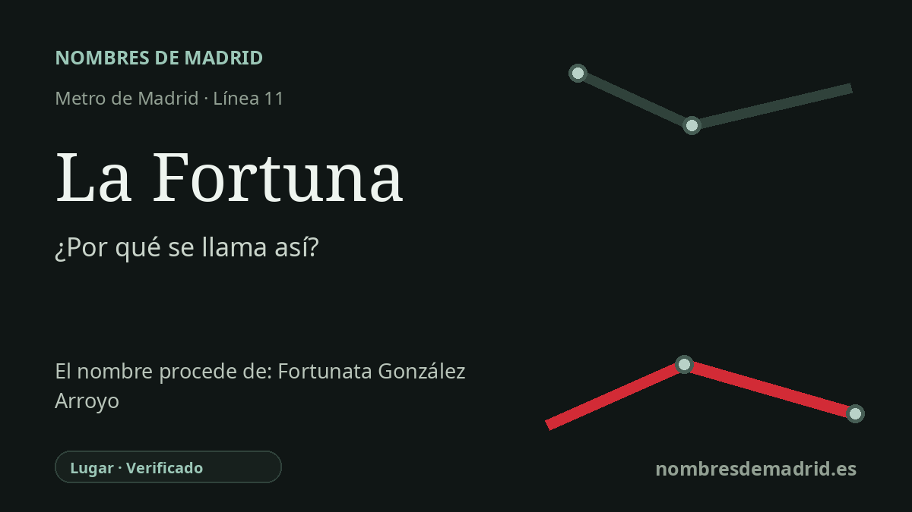

Publicado el · Investigación de Nombres de Madrid · Cómo verificamos cada origen · 6 fuentes consultadas
Respuesta rápida
La estación de La Fortuna lleva el nombre del distrito leganense de La Fortuna. El nombre del barrio se explica tradicionalmente y en fuentes oficiales como un homenaje de Domingo Dos Santos a su esposa, Fortunata González Arroyo.
La historia del nombre
La estación de La Fortuna se llama así directamente por el distrito de La Fortuna de Leganés, la zona a la que llegó la línea 11 al salir del término municipal de Madrid hacia este borde aislado del municipio. La estación abrió el 5 de octubre de 2010 como cabecera de la prolongación desde La Peseta, dando al barrio una conexión directa de Metro hacia Plaza Elíptica.
Detrás del nombre del barrio hay una historia personal. La publicación de la Comunidad de Madrid sobre la prolongación de la línea 11 explica que Domingo Dos Santos, conocido localmente como "El Portugués", bautizó el barrio con el nombre de su esposa, la madrileña Fortunata González Arroyo. En ese sentido, el nombre de Metro no funciona como una dedicatoria directa a una figura pública, sino como un topónimo de barrio que conserva una dedicatoria familiar.
El asentamiento comenzó hacia 1960 en el límite entre Leganés y Madrid. Los relatos sobre su fundación hablan de familias trasladadas desde la zona de Orcasitas, de primeras parcelas vinculadas al procesado de basuras y a la cría de animales, y de un núcleo inicial de casas bajas y calles estrechas. Las historias locales también señalan que los primeros nombres de calles solían seguir advocaciones de santos relacionadas con hijos, familiares o amigos de Dos Santos, lo que ayuda a entender la posterior importancia de San Fortunato en la identidad festiva del distrito.
Durante décadas, La Fortuna estuvo muy cerca físicamente de Madrid, pero mal conectada tanto con la capital como con el casco principal de Leganés. Fuentes locales y de transporte describen la llegada de autobuses, obras municipales, colegios, instalaciones sanitarias y deportivas, y la creación de la Junta de Distrito en los años noventa como hitos de integración del barrio. La prolongación del Metro se presentó en 2010 como respuesta a una reivindicación vecinal prolongada.
La evidencia respalda con fuerza la etimología, pero conviene separar el referente inmediato del último. La estación se llama por el barrio de La Fortuna; el barrio, a su vez, debe su nombre a Fortunata González Arroyo. Algunas fuentes secundarias discrepan en el número exacto de familias pioneras, de modo que esas cifras deben tratarse como contexto histórico y no como el núcleo de la etimología.